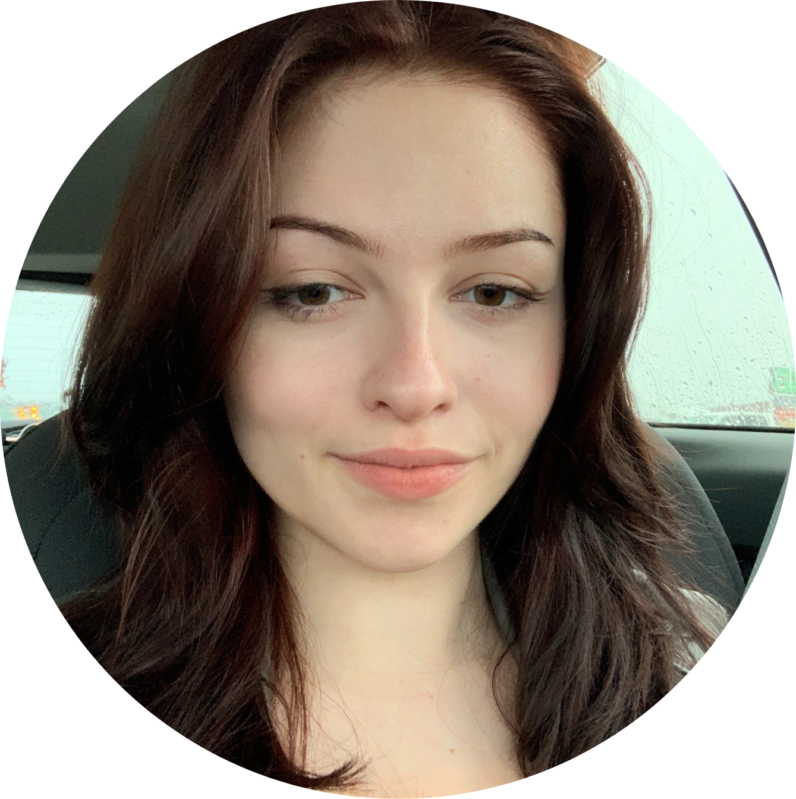
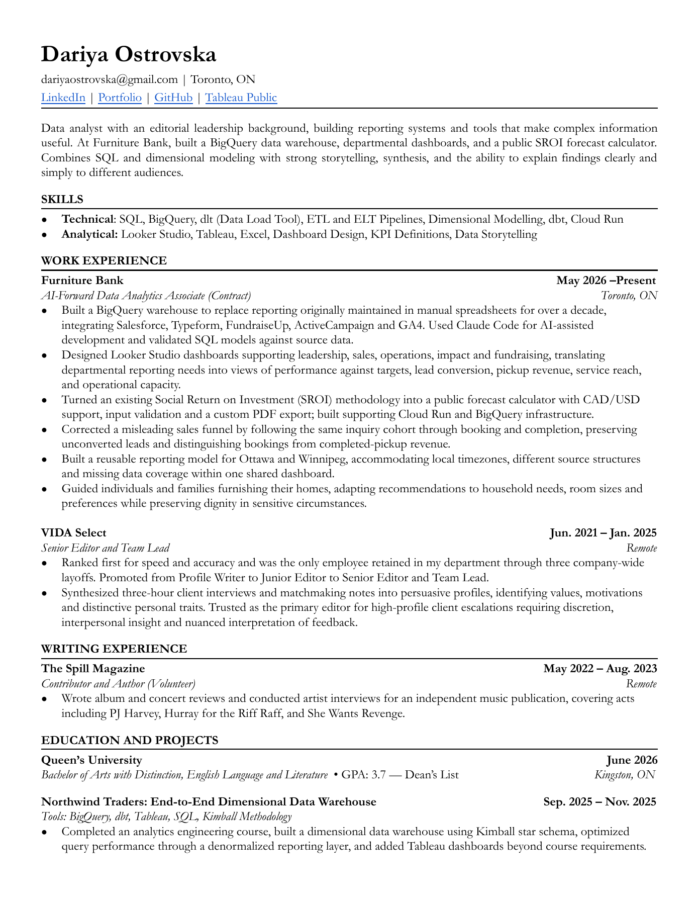

About me
About
I build data tools and reporting systems at Furniture Bank. Before that, I wrote and edited dating profiles, reviewed records, and interviewed musicians.

Résumé

Dariya Ostrovska
About me
I build data tools and reporting systems at Furniture Bank. Before that, I wrote and edited dating profiles, reviewed records, and interviewed musicians.


Dariya Ostrovska